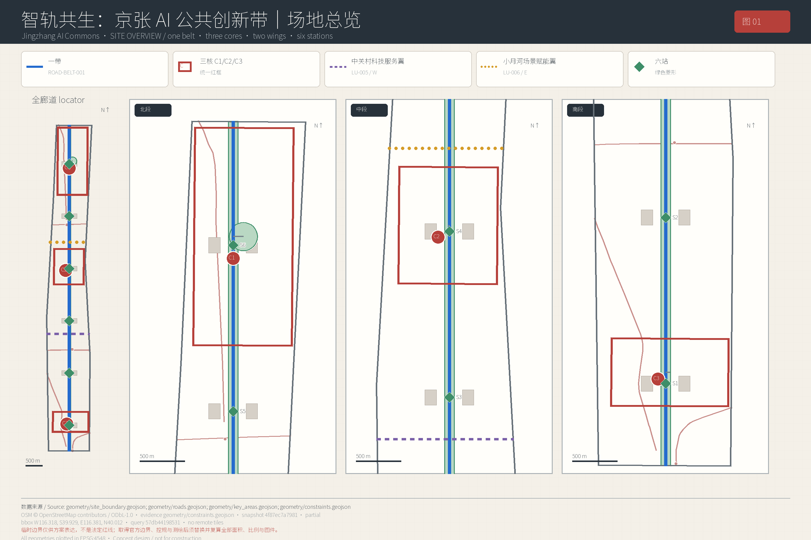
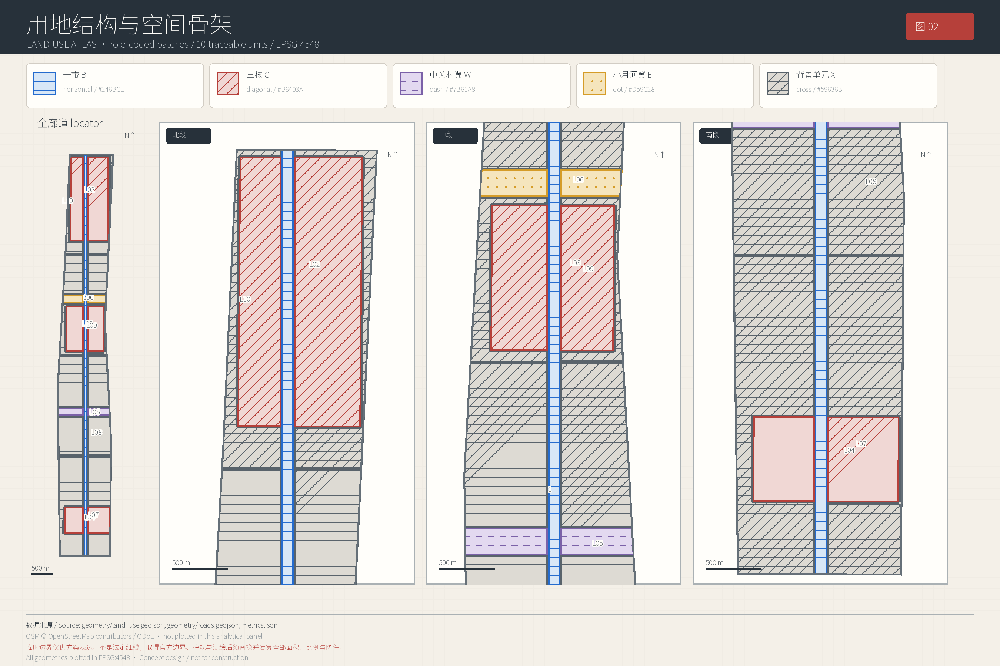
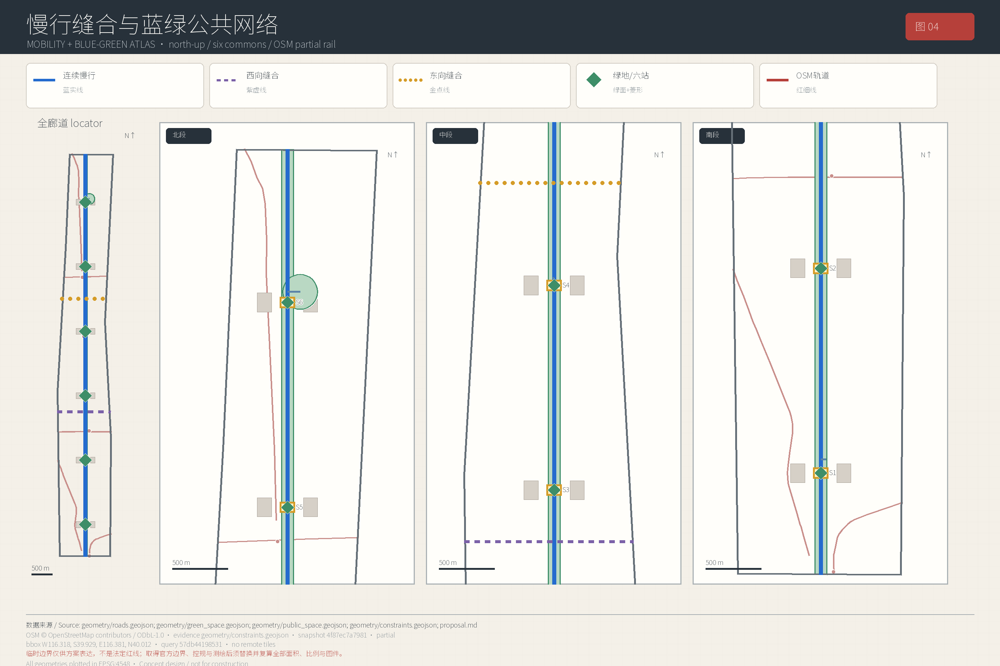
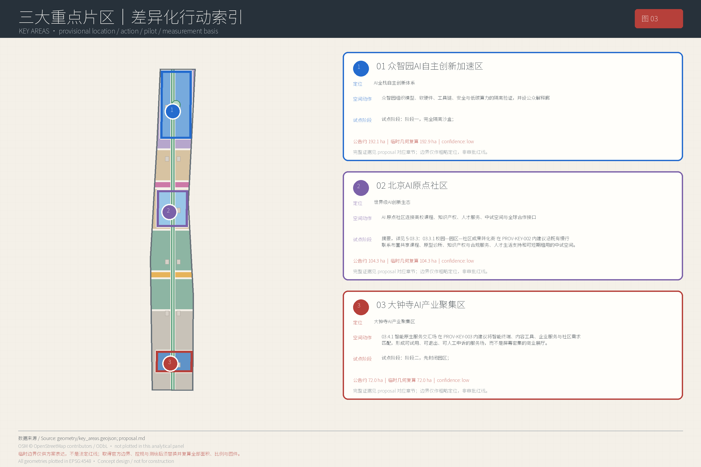
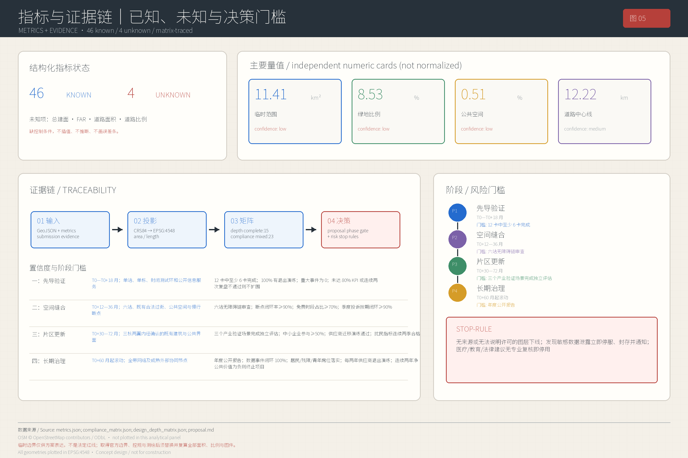

本方案把“轨”同时理解为京张铁路的历史轨迹、创新成果走向公共价值的转化轨道，以及 AI 必须遵守的治理轨则。它不是企业技术展厅，也不是法定规划或政府实施决定，而是一套可供公众、专业团队与运营机构共同校验的概念建议。所有空间动作均须在官方边界、文保、权属、控规、交通、市政与安全条件补齐后深化。[source:OFFICIAL-ANNOUNCEMENT] [source:AGENT-TASKBOOK] [standard:PROJECT-OFFICIAL-ANNOUNCEMENT] [standard:PROJECT-AGENT-OPEN-CALL-TASKBOOK]
01 读懂京张
01.1 从临时边界开始，而不是从假精确开始
当前提交使用 SITE-001 粗略替代总体设计范围，复算面积为 11,412,825.386 平方米，约 11.4 平方千米；其置信度为 low，且不是 official boundary。[data:geometry/site_boundary.geojson#SITE-001] [metric:site_area_sqm] [assumption:A-OFFICIAL-GEOMETRY-001] 三个重点区 PROV-KEY-001、PROV-KEY-002、PROV-KEY-003 同样只是 low-confidence 临时边界，三者面积与总数均是临时边界派生值，待官方 polygon 到位后替换并整体复算。[data:geometry/key_areas.geojson#PROV-KEY-001] [data:geometry/key_areas.geojson#PROV-KEY-002] [data:geometry/key_areas.geojson#PROV-KEY-003] [metric:key_area_count] [assumption:A-RECOMPUTE-001]
因此，本方案只对“一带、三核、两翼、六站”的组织逻辑和项目准入提出建议，不给出审定容积率、建筑高度、道路红线或具体拆改留结论。总建筑面积与 FAR 为 unknown；道路仅有中心线长度，缺少确认宽度，故道路面积与道路率也为 unknown。[metric:total_floor_area_sqm] [metric:floor_area_ratio] [metric:road_area_sqm] [metric:road_ratio] [depth:development_intensity_controls] 对现有建筑的“再利用或轻量补建”仅指后续调查方向，须先完成产权、结构、消防、文保与现状测绘。[assumption:A-CONTROLS-001]
OSM 轨道与站点数据仅用于背景定位，覆盖范围 partial、置信度 low，不能代替轨道运营方资料或工程测量。例如西直门背景点 OSM-STATION-XIZHIMEN 只支持讨论换乘关系，不支持推断出入口、客流或施工边界。[data:geometry/constraints.geojson#OSM-STATION-XIZHIMEN] [assumption:A-OSM-BACKGROUND-001]

01.2 三个真实矛盾与一个机会窗口
第一，铁路遗产的南北连续叙事与现实东西通行需求相互叠加。设计意图不是跨越铁路“画桥”，而是先盘点合法既有通道、地面过街、站点接口和无障碍绕行，再以小尺度公共空间补齐到达链。第二，高校、研究机构、园区和企业密集，但成果从实验室到中试、采购、公共体验的路径碎片化。第三，AI 服务往往先服务熟练用户，老人、儿童、残障人士和数字技能不足居民反而承担试错成本。
机会在于京张遗址公园可成为共同的公共底盘：以连续慢行、绿色开放空间、六处服务站和三处创新核心，把“铁路文化—中关村创新—AI 公共文化”从展陈线索转为日常服务链。该判断对应概念绿脊 GREEN-001、六处公共空间 PUBLIC-001 至 PUBLIC-006 与慢行主线 ROAD-BELT-001；这些均为 medium-confidence 概念设计几何，不是工程线位。[data:geometry/green_space.geojson#GREEN-001] [data:geometry/public_space.geojson#PUBLIC-001] [data:geometry/public_space.geojson#PUBLIC-006] [data:geometry/roads.geojson#ROAD-BELT-001] [depth:blue_green_public_space]
01.3 谁拥有这条带：八类用户与公共权利
| 用户 | 核心需要 | 可测权利保障 | 不允许的替代 |
|---|---|---|---|
| 青年与初入职场者 | 夜间学习、低门槛试验、就业连接 | 免费开放时段占比；实习与导师匹配完成率 | 以消费门槛换取公共空间使用权 |
| 老年人 | 清晰导视、线下窗口、健康服务导航 | 人工窗口等待时间；大字版与语音入口可用率 | 强迫下载 App 或用人脸换便利 |
| 儿童及照护者 | 安全游戏、AI 素养、亲子设施 | 儿童友好活动次数；看护视线与无障碍厕所审查 | 收集儿童画像或用于商业推荐 |
| 残障人士 | 连续无障碍链、多模态信息、可申诉 | 无障碍断点闭环率；人工协助响应时间 | 以“智能化”替代坡道、电梯与人员 |
| 高校师生 | 数据沙盒、中试接口、开放课程 | 可复现实验数；跨校项目数 | 默认开放未清权科研数据 |
| 周边居民 | 安静、安全、可参与的日常公共空间 | 居民席位比例；噪声投诉按期闭环率 | 活动流量挤占休憩与通行 |
| 中小企业与创业者 | 公平准入、低成本验证、采购路径 | 中小企业试点占比；平均准入周期 | 指定供应商绑定或“展示即采购” |
| 城市服务人员与访客 | 可解释工具、双语信息、应急人工服务 | 培训覆盖率；人工接管成功率；双语信息完整率 | 用模型结论替代专业判断 |
公共利益底线是：沿带基础通行、休憩、饮水、厕所、无障碍和基础信息服务不以注册、消费或数据授权为条件；商业活动不得独占连续公共空间；每项数字服务均提供非数字替代、申诉和退出路径。年度评估至少公开年龄友好、无障碍、免费时段、中小企业准入、投诉处置和数据事件六组指标。[standard:MOHURD-URBAN-DESIGN-MEASURES]
02 定义京张
02.1 名称、理念与三代叙事
正式名称为“智轨共生：京张 AI 公共创新带”，英文副标题为 “Jingzhang AI Commons”。“智轨”保留京张辨识度又指向创新转化；“共生”强调遗产、产业、社区和生态互不替代；“Commons”明确技术设施首先是公共知识和公共服务基础设施。视觉识别建议使用两条不闭合的平行线：一条取自铁路轨枕节奏，一条由可组合数据节点构成；只用原创几何和开源/系统字体，不挪用铁路、学校、企业商标。
叙事分三代：第一代“铁路把知识与城市连接起来”，以工程史、站场记忆和真实档案为证，不制造历史事件；第二代“中关村把科研与产业连接起来”，以高校—实验室—创业—服务网络解释创新文化；第三代“AI 把创新与公共生活连接起来”，但必须以最小数据、人工复核和公共可及为轨则。三代叙事沿六站展开：识史、开源、共学、共护、中试、共治，形成可重复到访而非一次性打卡的课程与服务链。[source:SRC-HAIDIAN-DISTRICT-PLAN-2017-2035] [depth:overall_spatial_structure]
任务书的三大定位不是三条宣传语，而是三种可审计的城市行动：
| 三大定位原名 | 空间落地 | 运营落地 | 证据、KPI 与缺口 |
|---|---|---|---|
| 百年京张文化带 | 以 GREEN-001 为连续时间轴，六站承载档案核验、人工讲解和可逆展陈，不把遗产当科技布景 | 遗产研究者、园林运营与社区共同编辑，争议内容进入公开复盘 | 来源标注率、无障碍讲解覆盖率；[data:geometry/green_space.geojson#GREEN-001]，缺口为文保范围和真实档案目录 |
| 都市AI生活体验带 | 把交通、医疗、教育、运动、导览和事务问答放入日常公共空间，所有服务保留人工与非数字入口 | 场景逐项准入、季度评估、未达 KPI 即降级或退出，运营不得以注册换基础服务 | 人工替代覆盖率、弱势用户完成率；[source:AGENT-TASKBOOK]，缺口为用户研究与无障碍实测 |
| AI融合创新带 | 三核承担研发、转化与智能原生服务，两翼连接要素服务和小月河公共验证，形成跨核转介网络 | 采用问题发布—沙盒—中试—场景验证—采购评估流程，公开失败复盘 | 跨核转介率、中小企业占比；[data:geometry/land_use.geojson#LU-002]，缺口为企业需求、权属和产业基线 |
五大功能对应五条从能力到公共价值的工作链：
| 五大功能原名 | 空间与服务动作 | 运营机制 | 证据、KPI 与前置缺口 |
|---|---|---|---|
| AI全栈自主创新体系 | 众智园组织模型、软硬件、工具链、安全与低碳算力的隔离验证，并设公众解释廊 | 独立检测机构建议运营，红队评估不通过不得外场测试 | 复现实验率、漏洞闭环率；[data:geometry/key_areas.geojson#PROV-KEY-001]，缺口为算力负荷与安全分级 |
| 世界级AI创新生态 | AI 原点社区连接高校课程、知识产权、人才服务、中试空间与全球合作接口 | 公开征集、分段准入、导师与投资/采购主体利益冲突披露 | 跨校项目和本地转化率；[data:geometry/key_areas.geojson#PROV-KEY-002]，缺口为机构授权与稳定资金 |
| AI+场景赋能新范式 | 小月河及六站提供交通、健康、教育、机器人等可退出的公共体验路径 | 每张场景卡执行伦理、安全、无障碍和人工接管评估，季度复盘 | 12 卡完成率、退出演练率；[standard:PROJECT-AGENT-OPEN-CALL-TASKBOOK]，缺口为获批 ODD 和数据清权 |
| 智能化AI活力城市 | 把慢行、公共空间、活动、创新服务与新基建合并为全天候但低扰动的生活网络 | 公共空间运营方控制免费时段、商业占用、噪声和照明，居民拥有申诉权 | 免费时段、投诉闭环；[data:geometry/public_space.geojson#PUBLIC-004]，缺口为现状客流和环境基线 |
| AI治理全球话语权 | 开源信号所展示模型卡、数据卡、威胁模型、停止规则和失败案例，形成可复用治理知识 | 运营由理事会审议、第三方审计、国际同行评议与年度公开报告共同约束，不以活动声量代替治理绩效 | 规则复用数、整改闭环率；[depth:risk_missing_data]，缺口为法务、伦理和国际传播复核 |
导视、标识与符号系统分为三层而不与整体 Logo 混淆：城市层用“双轨+节点”指认一带；场所层用铁路里程、信号和材料语言区分六站；服务层以易读图标、触觉/语音、大字版和中英双语标注人工入口、数据使用与退出。任何历史符号须有档案出处，任何 AI 符号须同时显示能力边界。三代文化对应的城市气质分别是“铁路工程理性”的可靠与节制、“中关村开放创新”的共享与敢试、“AI公共文化”的透明、包容和可问责。国际传播主句建议为 “From Railway Legacy to Accountable AI Commons”，用真实问题、公开规则和可复现成果讲述北京创新，而非用企业数量或未核实排名塑造声量。[source:AGENT-TASKBOOK] [standard:MOHURD-URBAN-DESIGN-MEASURES]
02.2 七个案例：借机制，不复制形象
下表案例仅作经验参照，不是本项目事实依据；均访问于 2026-08-08，待 Task 11 在 sources.json 登记。正文不复制案例图片、图纸或长段文字。
| 案例与一手来源 | 可借鉴点 | 不可照搬的边界 |
|---|---|---|
| 新加坡 Punggol Digital District，JTC：官方项目页 · URL-fingerprint:9956f8985a、Punggol Digital Twin 官方说明 · URL-fingerprint:0329c785cd | 高校、产业、社区共址；开放数字平台和数字孪生支持试验 | 集中建设、传感器规模和生物识别方式不可直接套用；本方案坚持最小采集和分级开放 |
| 赫尔辛基物流机器人试点指南，City of Helsinki：官方 PDF · URL-fingerprint:6b2c262df2 | 文件支持真实城市测试的选址、测试许可申请和与城市街道主管机关协调 | 只借鉴“先协调主管机关再测试”的过程；芬兰许可制度不可照搬，文件未说明的治理机制不作案例归因 |
| 加拿大 Toronto Quayside，Waterfront Toronto：公众简报 · URL-fingerprint:104785ba5a | 把数字原则、数据用途和隐私讨论置于开发之前 | 治理制度、数据本地化规则和项目条件不同；不能把“智慧城市”视为默认授权 |
| Toyota Woven City，Toyota：Phase 1 官方说明 · URL-fingerprint:282e7aa483；访问状态：2026-08-08 检索可访问，Task 11 登记页面元数据 | 明确“测试场”身份、分期入住、发明者与居民共创 | 企业自有封闭园区不能替代开放城区治理；京张公共空间不得公司化 |
| 韩国 Seoul AI Hub，Seoul Metropolitan Government：政策档案 · URL-fingerprint:96c4d977b9 | 教育、孵化、算力、PoC 和开放创新按成长阶段衔接 | 资金强度、机构名单和绩效不可移植或冒充本地承诺 |
| MIT Kendall Square Initiative，MIT：项目页 · URL-fingerprint:a332e25edc；访问状态：2026-08-08 检索可访问，Task 11 登记页面元数据 | 将实验室、住房、零售、创新空间、博物馆和开放空间混合，并让社区参与塑造计划 | 单一机构土地条件不同；不能推导京张的权属、开发强度或拆建方案 |
| 河套深港科技创新合作区深圳园区，官方运营平台：园区概况 · URL-fingerprint:8c42b893b0 | 科研、中试、规则对接、人才服务构成转化链 | 跨境制度与规划指标是河套特定条件；不作为京张面积、强度或政策依据 |
从案例提炼的共同机制是“开放接口—有界测试—独立评估—公共反馈—是否扩围”，而非“先铺设备再找用途”。其中 ODD、人工退出和复盘是本方案自主提出的治理要求，不归因于赫尔辛基指南。京张的适配版本以中小企业可进入、居民可退出、数据可删除、运营可更换为基本准入条件。[source:AGENT-TASKBOOK]
02.3 产业生态：从论文到公共价值的五段链
产业生态建议组织为“问题发布—合规沙盒—原型中试—公共验证—采购/推广评估”五段链。高校师生和居民提出问题；平台运营方完成数据分级、伦理和无障碍审查；企业在受控环境做原型；独立评估者记录失败；采购主体依据公开指标另行决策。任务书中的两翼不是泛化的东西两侧，而是具有精确分工的协同网络：
| 两翼原名 | 网络、公共体验路径及一带三核关系 | 证据与运营 | 前置缺口与停止边界 |
|---|---|---|---|
| 中关村科技服务翼 | 网络连接高校、知识产权、资本、人才、算力与国际合作服务；公共体验从六站问题台进入专业诊所，再转介三核；它为一带三核提供要素而不替代片区运营 | 建议以 LU-005 和 ROAD-WING-W-001 为概念载体，运营采用公开服务目录、利益冲突披露和跨核工单；[data:geometry/land_use.geojson#LU-005] [data:geometry/roads.geojson#ROAD-WING-W-001] | 缺口是服务机构授权、需求基线、产权和资金来源；不得把资本对接写成融资承诺，未清权数据停止流转 |
| 小月河场景赋能翼 | 网络连接小月河公共空间、社区、高校测试者和三核产品团队；公共体验遵循“看懂—试用—反馈—人工退出”；它把一带三核的研发转为交通、医疗、教育和机器人等场景验证 | 建议以 LU-006 和 ROAD-WING-E-001 为概念载体，运营按场景卡逐项准入、独立评估和季度复盘；[data:geometry/land_use.geojson#LU-006] [data:geometry/roads.geojson#ROAD-WING-E-001] | 缺口是小月河蓝绿控制、真实场地、用户研究与 ODD 审批；安全、隐私或无障碍不达标即停止试点 |
三核 LU-002—LU-004 分别聚焦全栈自主、成果转化与智能原生服务；两翼为其提供要素与反馈闭环。这只是空间组织建议，不改变法定用地性质。[data:geometry/land_use.geojson#LU-002] [depth:land_use_layout]
产业指标不以虚构产值为目标，而以转化质量衡量：年度公开问题数、完成伦理审查的试点数、中小企业参与率、跨校团队率、原型复现率、从试点到第三方评估的中位时长、失败项目公开复盘率、公共价值 KPI 达标率。资金、企业名单、算力规模和政策补贴均待相关主体依法确定，不写成既定安排。

02.4 三处创新朝圣节点：可学习、可验证、可再来
| 节点 | 三代叙事 | 空间动作 | 运营与指标 | 前置条件 |
|---|---|---|---|---|
| “零公里·共创站” | 铁路里程/工程史—中关村创业史—AI 公共问题发布 | 在既有可开放空间设置档案桌、问题墙、无屏障讲解与开放课程 | 公共/高校联合策划；档案来源标注率 100%，免费活动占多数 | 文保核查、场地产权和消防确认 |
| “开源信号所” | 铁路信号—计算网络—模型透明与安全 | 可逆展陈、模型卡阅览、红队演练室、离线演示 | 高校/行业组织建议运营；复现实验、漏洞闭环和公众课程计数 | 数据分级、网络隔离、无商业品牌独占 |
| “未来交接场” | 货运交接—成果转化—机器人与公共服务交接 | 封闭 ODD 测试环、人工接管席、观众安全廊和失败案例库 | 独立测试机构建议主责；接管成功率、零严重伤害、退出完成率 | 获批 ODD、安全认证、保险和应急预案 |
“朝圣”指专业学习与公共参与的持续吸引力，不造巨型地标、不消费遗产。三个节点分别把历史证据、开源能力与真实验证变成可参与的公共仪式，并通过课程护照串联，但不采集个体轨迹。[data:geometry/public_space.geojson#PUBLIC-002] [data:geometry/public_space.geojson#PUBLIC-005] [data:geometry/public_space.geojson#PUBLIC-006]
荣誉展示体系。 荣誉对象不是企业规模或赞助金额，而是经审计的开源贡献、公共问题解决、无障碍改进、安全漏洞披露、失败复盘和长期维护。候选记录须包含贡献者、许可、复现证据、公共价值 KPI、利益冲突和社区评价，由技术、居民、残障与伦理代表分席评审；原始记录进入公共知识库，展示结果允许申诉和撤销。禁止企业付费买榜、赞助换冠名、以融资额替代公共价值，供应商退出后仍保留贡献出处但移除失效能力声明。年度 KPI 为证据可复现率、社区异议闭环率和中小团队入选比例。[source:AGENT-TASKBOOK]
公共空间组件库。 组件采用可逆、可修、可替换原则，不绑定供应商：
| 组件 | 部署条件 | 无障碍与安全 | 维护与退出 |
|---|---|---|---|
| 双轨导视柱 | 档案与路径核验、文保同意、避开盲道和疏散线 | 触觉、大字、中英双语、夜间低眩光；不含商业追踪码 | 月检；史实争议或通行冲突时可拆除并恢复场地 |
| 人工服务/数据告知台 | 有值守主体、隐私告知和非数字资料 | 轮椅可达、助听与语音；不得采人脸和连续轨迹 | 日巡；无人员接管或告知失效即停用数字服务 |
| 开源学习桌 | 清权课程、电源消防和预约规则 | 圆角、防夹、儿童数据默认不收集 | 季度内容复核；授权到期即下线资料 |
| ODD 安全边界包 | 仅封闭或获批 ODD，含围栏、急停、接管席和观众廊 | 保持最小通行宽度、显著声光提示、现场安全员 | 每次试验前检查；越界、通信失效或伤害即撤场 |
| 可逆展陈框 | 结构、风荷载、文保与消防核验 | 不遮挡视线和疏散，设置盲文/音频替代 | 活动后限时拆除；破损或来源不明立即下架 |
| 模块化休憩/充电座椅 | 树木、地下管线、电气和排水审查 | 扶手、靠背、不同座高，充电与坐席不捆绑注册 | 运维责任到人；故障断电并保留普通坐席功能 |
组件部署数量不预设；先在单站做无障碍、安全、维护成本和公众使用评估，只有通过复盘才复制。[depth:blue_green_public_space]
03 设计京张
03.1 一带三核两翼六站：六个总体动作
03.1.1 动作一：保留铁路时间轴
设计意图是先让历史可读，再叠加新功能。沿 GREEN-001 建议以可逆铺装、轨枕节奏座椅、档案二维码和人工讲解形成连续叙事；任何标识先核对档案出处和文保要求。运营由遗产研究、园林与社区代表共同策展，KPI 为来源标注率、无障碍讲解覆盖率、季度内容纠错闭环率。缺口是文物本体、保护范围、建设控制地带和树木调查。[data:geometry/green_space.geojson#GREEN-001] [standard:MOHURD-URBAN-DESIGN-MEASURES]
03.1.2 动作二：用六站缝合东西
六个 NODE-STATION-* 是服务站概念点，不是轨道车站。每站优先利用依法可开放的既有通道和地面空间，形成“过街—休憩—问询—无障碍协助”一体节点；桥隧、地下空间和新出入口均不作可行性结论。运营方按日巡检，KPI 为无障碍连续率、夜间照明故障闭环时间、平均绕行距离改善；前置是交通组织、产权、消防与地下管线核查。[data:geometry/roads.geojson#NODE-STATION-001] [data:geometry/roads.geojson#NODE-STATION-006] [assumption:A-CONTROLS-001]
03.1.3 动作三：三核承接不同创新阶段
众智园侧重全栈自主与安全验证，AI 原点社区侧重高校成果转化与人才生活，大钟寺侧重智能原生服务与公共体验。三核通过 ROAD-CORE-001 至 ROAD-CORE-003 接入主带，而不是彼此复制。运营采用统一准入、分核专业评估，KPI 为跨核转介率、试点复现率与中小企业占比；正式边界到位前不按当前面积分配投资。[data:geometry/roads.geojson#ROAD-CORE-001] [data:geometry/roads.geojson#ROAD-CORE-003] [depth:three_key_area_detailed_design]
03.1.4 动作四：两翼补齐知识与中试
中关村科技服务翼唯一映射：西侧，LAND_USE 图层的 LU-005（structure_role=west_wing）与 ROAD-WING-W-001 共同表达知识/公共服务空间角色；本方案服务角色标识为 knowledge_public_service，承载知识产权、人才、资本、算力和国际合作等科技服务网络，并向一带三核提供公开转介。[data:geometry/land_use.geojson#LU-005] [data:geometry/roads.geojson#ROAD-WING-W-001]
小月河场景赋能翼唯一映射：东侧，LAND_USE 图层的 LU-006（structure_role=east_wing）与 ROAD-WING-E-001 共同表达产业/公共场景验证空间角色；本方案服务角色标识为 industry_public_scenario_validation，沿小月河组织公众体验、测试与反馈，并把一带三核的原型送入有界验证。[data:geometry/land_use.geojson#LU-006] [data:geometry/roads.geojson#ROAD-WING-E-001]
上述英文服务角色标识只是正文分类键，不宣称已写入 GeoJSON 属性。两翼以公开目录共享能力，禁止厂商专有协议锁定；共同 KPI 为开放课程覆盖、合规审查周期、跨翼工单和接口迁移通过率，前置是数据、算力、消防、蓝绿控制与采购制度。
03.1.5 动作五：把交通、市政与新基建做成公共服务
交通侧先做步行、自行车、公交/轨道接驳和静态交通调查，再讨论获批 ODD 内的自动驾驶接驳、机器人和无人配送。新基建采用分层架构：公共信息层只用开放非个人数据；运营层使用聚合设备状态；受限试验层物理/网络隔离、到期删除。边缘计算节点不采集人脸或连续个体轨迹。KPI 为慢行断点闭环、服务可用率、人工接管时间、能耗强度与安全事件数；市政容量、机房、供电、通信和道路断面均待专业核查。[metric:road_centerline_length_m] [depth:traffic_rail_slow_parking] [depth:municipal_new_infrastructure]
03.1.6 动作六：以公共空间而非展厅统筹日常
六处 PUBLIC-* 分别容纳青年共创、开源学习、夜间自习、包容运动、学生原型市集和代际数字帮助；基础设施免费使用，商业展示限时、限面、可撤。当前公共空间合计面积指标来自概念几何，不能视为法定供给。[data:geometry/public_space.geojson#PUBLIC-001] [data:geometry/public_space.geojson#PUBLIC-004] [metric:public_space_area_sqm] 运营委员会中居民、残障人士、青年和中小企业代表应有明确席位；KPI 为免费时段、活动噪声投诉、不同用户到访与公共空间商业占用比例。

03.2 众智园 AI 自主创新加速区
03.2.1 花园型全栈验证院
在 PROV-KEY-001 内建议以现有可再利用空间为优先，布置模型安全评测、开源适配、软硬件协同和低碳算力演示，不以新增大体量建筑为前提。空间动作是“实验室—隔离沙盒—公众解释廊—清河生态界面”四段串联；公众只能看到脱敏结果和模型卡，生产数据不出安全域。建议由高校、检测机构与园区运营方协同，KPI 为复现实验比例、漏洞修复周期、能耗披露完整率。正式片区边界、清河蓝线、权属、算力负荷与文保资料是准入前置。[data:geometry/key_areas.geojson#PROV-KEY-001] [depth:three_key_area_detailed_design]
03.2.2 安全治理与开放标准客厅
设置不绑定厂商的标准工作坊、红队演练和公众问答，每个项目提交数据卡、模型卡、威胁模型、人工接管和终止方案。开放日不等于开放敏感系统；演示使用合成或匿名数据。运营以第三方测试和公众观察员共同见证，KPI 为问题公开率、整改闭环率、供应商可替换测试通过率。涉及国家、商业或个人敏感信息时停止公开展示并转入受控环境。
03.3 北京AI原点社区
03.3.1 校园—园区—社区成果转化街
在 PROV-KEY-002 内建议沿既有慢行联系布置共享课程、原型诊所、知识产权与合规服务、人才生活支持和可短期租用的中试空间。BLDG-005—BLDG-010 只表达概念性再利用或轻量补建簇，不代表具体建筑处置。[data:geometry/key_areas.geojson#PROV-KEY-002] [data:geometry/buildings.geojson#BLDG-005] [data:geometry/buildings.geojson#BLDG-010] 运营采取公开征集和阶段评审，KPI 为跨校项目、中小企业准入、居民问题转化及失败复盘。前置是建筑逐栋测绘、产权同意、消防和租赁机制。
03.3.2 人才生活与低扰动更新
将托育、健康导航、夜间学习、运动、餐饮和无障碍服务与创新空间同等对待，避免“只有工位没有生活”。施工建议分时分段，保留居民通行和安静时段；活动需设噪声、照明、垃圾和人流上限。KPI 为 15 分钟服务可达性调查、夜间投诉闭环、女性与照护者参与率。总建面、建筑高度和拆改留分类在控制条件不足时保持 unknown。[metric:total_floor_area_sqm] [depth:retain_renovate_demolish]
03.4 大钟寺AI产业聚集区
03.4.1 智能原生服务交汇场
在 PROV-KEY-003 内建议将智能终端、内容工具、企业服务与社区需求匹配，形成可试用、可退出、可人工申诉的服务场，而不是屏幕密集的商业展厅。地铁站四象限的步行连通先以现状调查和可逆导视验证；不推断新增出入口或地下工程可行性。[data:geometry/key_areas.geojson#PROV-KEY-003] [data:geometry/roads.geojson#NODE-STATION-001] KPI 为步行绕行改善、公共服务使用率、无障碍问题闭环和商业占用上限执行率。
03.4.2 企业共性服务与静态交通治理
建议用共享会议、合规、算力预约、招聘、测试和物流微枢纽降低中小企业成本；停车与装卸采用预约错峰，数据只保留聚合占用，不追踪个人。运营主体可由园区平台通过公开采购确定，服务接口和数据须可迁移。KPI 为共享服务使用率、平均响应时间、装卸冲突和供应商切换演练结果。前置是停车普查、产权、道路断面、消防和地铁运营资料。

04 激活京张
04.1 六张日常公共服务场景卡
04.1.1 场景卡01：AI 慢行与无障碍导航
服务对象：老人、残障人士、儿童照护者、访客。空间载体：ROAD-BELT-001 与六处服务站。[data:geometry/roads.geojson#ROAD-BELT-001] 输入数据：经核验的坡度、台阶、施工封闭、照明和公共设施状态；OSM 仅作 partial 背景。隐私边界：不做人脸、不保存连续个体轨迹，定位可仅在端侧处理。人工接管/退出：一键转人工服务站；提供纸质地图和现场导视；用户可清除本次路线。运营主体：建议由公共空间运营方牵头，残障组织参与审查。KPI：无障碍断点闭环率、错误路线纠正时长、人工转接成功率。试点阶段：阶段一，以单站—单段步行为封闭评测范围，达标后扩展。
04.1.2 场景卡02：社区健康服务导航
服务对象：老人、慢病居民、访客。空间载体：PUBLIC-006 代际帮助站。[data:geometry/public_space.geojson#PUBLIC-006] 输入数据：公开的机构、科室、开放时间和无障碍信息，不接入病历。隐私边界：不做诊断、不存健康问答原文，敏感问题默认离线。人工接管/退出：转接现场社工或官方热线；紧急情况提示拨打急救电话；用户可选择纸质清单。运营主体：建议由社区公共服务机构牵头，医疗专业人员审核知识库。KPI：错误转介率、人工复核覆盖率、老年用户完成率。试点阶段：阶段一，仅做信息导航；医疗 AI 不替代医生判断。
04.1.3 场景卡03：开放课程与学习伴侣
服务对象：儿童、青年、高校师生、居民。空间载体：PUBLIC-002 开源学习台阶。[data:geometry/public_space.geojson#PUBLIC-002] 输入数据：清权课程、开放资料、教师审核题库。隐私边界：不建立儿童商业画像，不把学习对话用于模型训练。人工接管/退出：教师可关闭生成内容并切换离线教案；家长/学生可删除记录。运营主体：建议由高校与社区教育机构共管。KPI：课程免费覆盖、事实错误纠正时长、教师复核率、无障碍版本覆盖。试点阶段：阶段一，小班、离线沙盒；教育 AI 不替代教师评价。
04.1.4 场景卡04：铁路文化可信导览
服务对象：居民、学生、游客、研究者。空间载体：GREEN-001 线性遗产叙事轴。[data:geometry/green_space.geojson#GREEN-001] 输入数据：档案馆、博物馆及经专家审核的公开史料。隐私边界：不追踪参观路径，不基于身份差异化推送商业内容。人工接管/退出：每条生成解说显示来源并可转人工讲解；争议内容下线复核。运营主体：建议由遗产研究机构、园林运营和社区共同编辑。KPI：来源标注率、纠错闭环、人工讲解场次、无障碍音频覆盖。试点阶段：阶段一，从三处史料核验点开始。
04.1.5 场景卡05：包容运动与儿童共玩助手
服务对象：儿童、青年、老人、残障人士及照护者。空间载体：PUBLIC-004 包容运动场。[data:geometry/public_space.geojson#PUBLIC-004] 输入数据：设施开放状态、天气、活动预约和匿名设备故障。隐私边界：不采集儿童影像或生物特征；客流仅做不可逆聚合。人工接管/退出：现场管理员有停机权；保留无设备的自由活动时段。运营主体：建议由社区体育机构与无障碍顾问共管。KPI：跨年龄活动次数、设施故障闭环、免费时段、伤害事件。试点阶段：阶段二，先以非联网互动设施验证。
04.1.6 场景卡06：公共事务问答与申诉台
服务对象：居民、中小企业、访客、城市服务人员。空间载体：PUBLIC-001 青年公共前场。[data:geometry/public_space.geojson#PUBLIC-001] 输入数据：公开办事指南、活动规则和服务目录。隐私边界：不处理身份证明原件，不跨用途拼接咨询记录。人工接管/退出：低置信答案拒答并转人工；纸质/电话渠道并行；可申请删除会话。运营主体：建议由公共服务窗口负责内容，技术方仅提供工具。KPI：转人工率、错误答案率、申诉闭环时长、非数字渠道可用率。试点阶段：阶段一，仅覆盖低风险公开信息。
04.2 六张产业与城市验证场景卡
04.2.1 场景卡07：产业验证一—模型安全与开源适配
服务对象：高校师生、中小企业、开发者、检测机构。空间载体：众智园受控实验室。输入数据：合成数据、清权测试集、模型卡和威胁模型。隐私边界：生产数据不得进入；测试数据按项目隔离和到期删除。人工接管/退出：安全负责人可断网、停算、撤销凭据并封存日志。运营主体：建议由独立检测机构牵头，高校和园区协同。KPI：漏洞发现/闭环、可复现实验率、供应商可替换率、零敏感数据外泄。试点阶段：阶段一，完全隔离沙盒；未通过红队评测不得外场部署。[data:geometry/key_areas.geojson#PROV-KEY-001]
04.2.2 场景卡08：产业验证二—机器人共道测试
服务对象：机器人企业、配送员、残障人士、园区运维。空间载体：未来交接场的封闭测试环。输入数据：设备状态、匿名障碍物类别、人工标注险情。隐私边界：不做人脸识别；视频短期本地留存且仅用于事故复盘。人工接管/退出：现场急停、远程接管与人工搬离三重机制；任何人可触发安全停机。运营主体：建议由有资质测试机构与场地运营方负责。KPI：每千公里人工接管、冲突、最小通行宽度占用、零严重伤害。试点阶段：阶段一仅封闭 ODD；阶段二仅在获得主管部门批准后讨论扩围。
04.2.3 场景卡09：产业验证三—低速自动驾驶接驳
服务对象：通勤者、访客、行动不便者、车辆研发团队。空间载体：受控园区道路或获批 ODD，不以 ROAD-BELT-001 作为自动获批线位。输入数据：车辆状态、道路设施、天气和匿名事件标签。隐私边界：乘客身份与运行日志分离；不保留连续个体轨迹。人工接管/退出：安全员、远程接管、固定上下客点和替代摆渡车；越界或通信异常立即降级停车。运营主体：建议由获许可运营者负责，交通与场地管理方监督。KPI：接管率、准点率、无障碍乘车成功率、最小风险状态成功率。试点阶段：阶段二，仅封闭或依法获批 ODD，未获批不得上公共道路。
04.2.4 场景卡10：无人配送微枢纽
服务对象：居民、商户、配送员、园区后勤。空间载体：大钟寺微枢纽与获批短路线。输入数据：订单编号、箱体状态、路线障碍和预约时窗。隐私边界：地址与设备日志分离，最短留存，不采人脸。人工接管/退出：配送员接替、远程急停、人工取件柜；用户可选择传统配送。运营主体：建议由持证物流运营者负责，街区运营方协调。KPI：人行冲突、超时率、人工接替时长、投诉闭环、配送员劳动影响评估。试点阶段：阶段二，先封闭园区；公共道路必须另行获批 ODD。[data:geometry/key_areas.geojson#PROV-KEY-003]
04.2.5 场景卡11：建筑能耗与空间运维数字孪生
服务对象：设施运维、中小企业、研究者、公共空间使用者。空间载体：经产权方授权的单栋既有建筑和 PUBLIC-003 周边。[data:geometry/public_space.geojson#PUBLIC-003] 输入数据：分项能耗、设备故障、室内环境和匿名聚合占用。隐私边界：不使用个体门禁、工位或 Wi-Fi 轨迹；研究接口只给聚合数据。人工接管/退出：运维人员可切回手动控制；模型不得直接越权控制生命安全系统。运营主体：建议由设施管理方负责，第三方审计模型与节能基线。KPI：故障提前发现率、误报率、能耗改善、手动回退成功率。试点阶段：阶段二，从单栋非关键系统开始。
04.2.6 场景卡12：中小企业场景撮合与采购前验证
服务对象：中小企业、创业者、高校团队、居民问题提出者、潜在采购方。空间载体：PUBLIC-005 学生原型市集与小月河场景赋能翼的场景验证空间。[data:geometry/public_space.geojson#PUBLIC-005] 输入数据：公开问题清单、能力声明、评测报告和利益冲突披露。隐私边界：不公开商业秘密；评审数据与营销名单隔离。人工接管/退出：评审委员会可暂停项目；企业可带走数据并删除平台副本；未达标即退出，不暗示采购承诺。运营主体：建议由中立平台牵头，居民、专家和采购代表分席评审。KPI：中小企业占比、平均准入周期、第三方复现率、失败复盘公开率、供应商切换成本。试点阶段：阶段一建立规则，阶段二开展小额原型验证。
05 落地京张
05.1 四阶段推进：每一步都可停止
时间窗口从取得必要授权和基础资料之日（T0）起算，不代表已确定工期。PHASE-001—PHASE-004 是 medium-confidence 概念分区，其面积只用于当前模型复算，官方边界替换后需重算。[data:geometry/phasing.geojson#PHASE-001] [data:geometry/phasing.geojson#PHASE-004] [metric:phasing_total_area_sqm]
| 阶段 | 时间窗口与空间范围 | 建议牵头/协同主体 | 准入与退出条件 | 资金及运维来源建议 | 可量化 KPI 与复盘门槛 |
|---|---|---|---|---|---|
| 一：先导验证 | T0—T0+18 月；单站、单栋、封闭测试环和公开信息服务 | 区级统筹平台建议牵头；高校、社区、残障组织、测试机构协同 | 有权使用场地、数据清权、伦理/安全审查、人工接管、保险；发生严重伤害、敏感数据泄露或无法回退即停 | 成本中心：企业/课题方承担试点设备、测试和保险，建议专项研究预算承担独立评估；O&M责任：场地运营方日常巡检、技术方维护设备；退出：设备撤除或经授权资产移交，账号撤销并完成数据删除 | 12 卡中至少 6 卡完成；100% 有退出演练；重大事件为 0；未达 80% KPI 或连续两次复盘不通过则不扩围 |
| 二：空间缝合 | T0+12—36 月；六站、既有合法过街、公共空间与慢行断点 | 公共空间/交通管理主体建议牵头；园林、街道、运营方协同 | 交通、文保、树木、管线、无障碍和消防审查；投诉或通行冲突超阈值则缩减活动/恢复原状 | 成本中心：建议城市更新/公共空间资金承担空间工程，公益合作只补充活动；O&M责任：公共空间运营方承担保洁、照明、导视和无障碍巡检；退出：可逆设施恢复原状，合格资产经授权移交，活动数据删除 | 六站无障碍链审查；断点闭环率≥90%；免费时段占比≥70%；季度投诉按期闭环≥90% |
| 三：片区更新 | T0+30—72 月；三核两翼内经确认的既有建筑与公共界面 | 片区实施主体建议牵头；产权方、专业团队、产业平台协同 | 官方边界、控规、权属、结构消防和市政容量明确；未取得产权同意或专业许可即退出相应地块 | 成本中心：依法设立的更新基金/产权方承担改造，服务采购承担公共服务补贴，平台预算承担平台运维；O&M责任：产权/物业负责空间，平台运营方负责服务；退出：合同约定资产移交、接口迁移和数据删除 | 三个产业验证场景完成独立评估；中小企业参与≥50%；供应商迁移演练通过；扰民指标连续两季合格 |
| 四：长期治理 | T0+60 月起滚动；全带网络及成熟外部协同节点 | 多方治理理事会建议牵头；公共部门、社区、高校、企业、专业机构协同 | 只有前阶段公共价值、安全、财务与运维均通过才纳入常态；年度审计不合格则降级或终止 | 成本中心：建议基础公共服务预算承担公共服务补贴，竞争性采购承担平台运维，场地收入回补维护；O&M责任：理事会委托并审计公共空间、平台和服务运营；退出：资产清册依法移交、开放格式数据迁移并删除供应商副本 | 年度公开报告；数据事件闭环 100%；居民/残障/青年席位落实；每两年供应商退出演练；连续两年净公共价值为负则终止项目 |
各阶段面积值不用于投资承诺；阶段顺序允许重叠，但每个项目必须独立过闸。[metric:phase_1_area_sqm] [metric:phase_2_area_sqm] [metric:phase_3_area_sqm] [metric:phase_4_area_sqm] [depth:phasing_implementation]
以下五项是方案建议控制值，必须在 T0 后以正式法规与运营条件校准；校准只可收紧安全底线，不得把建议值包装成法定阈值。安全、隐私、无障碍为一票否决，不得被加权平均掩盖；任一否决项触发即先停后审，其余 KPI 才进入达标率计算。
KPI-D01 阶段80%门槛。 metric/formula或控制口径：适用且非否决类 KPI 中“达到经批准目标”的项数÷适用项数，建议≥80%，同时所有否决项通过；baseline：T0 后首个完整试点周期建立并由独立评估确认，基线未确认不得扩围；测量周期：月度记录、阶段闸门汇总；数据最小化：只存 KPI 分子分母、证据链接和匿名项目 ID；measurement owner：独立评估秘书处；decision owner：阶段闸门委员会；触发暂停动作：低于80%则冻结扩围和新增采购；整改复核：责任方提交逐项纠正证据，由独立评估复测；批准恢复主体：阶段闸门委员会在否决项全部通过后书面批准。
KPI-D02 投诉超阈值。 metric/formula或控制口径：有效投诉按期闭环数÷有效投诉总数，方案建议≥90%；单次严重安全/歧视投诉直接触发否决；baseline：运营前90日只建基线不作趋势美化，并公开投诉分类口径；测量周期：月度测量、季度决策；数据最小化：公开仅保留案件类别、时间和处理状态，身份联系方式隔离且限期删除；measurement owner：投诉受理与社区观察员双签；decision owner：公共空间运营委员会；触发暂停动作：连续两月低于90%暂停新增活动，严重单案立即停相关服务；整改复核：抽样回访、现场复查与社区听证；批准恢复主体：运营委员会与社区代表共同批准，严重案另需安全/法务负责人同意。
KPI-D03 扰民合格。 metric/formula或控制口径：依法适用的噪声、照明、人流、垃圾和施工时段控制项逐项通过，方案口径为全部通过而非取平均；baseline：活动前连续30日背景监测和投诉基线；测量周期：施工/活动实时抽测、每周汇总、季度审议；数据最小化：只记录点位级环境值与匿名事件，不记录个体轨迹；measurement owner：具备能力的环境监测方与街区巡查；decision owner：空间运营负责人；触发暂停动作：任一法定限值超标或连续两期建议控制值不合格，立即缩容、改时或停办；整改复核：重新监测并验证交通、声光和清运措施；批准恢复主体：空间运营负责人会同相应主管/专业主体。
KPI-D04 公共价值。 metric/formula或控制口径：免费可及、包容参与、知识开放、环境改善、居民问题闭环五项逐项判定，通过数须5/5；安全、隐私、无障碍另行否决，不计入加权得分；baseline：首个运营年度建立各用户群基线并公布不可比项；测量周期：季度仪表盘、年度决策；数据最小化：使用自愿匿名问卷和聚合服务计数，不做跨场景画像；measurement owner：公共价值账审计团队；decision owner：多方治理理事会；触发暂停动作：任一核心项连续两季不通过，暂停商业扩张和新场景；整改复核：居民、青年、残障和中小企业代表分别验收；批准恢复主体：理事会非供应商席位表决通过。
KPI-D05 商业占用。 metric/formula或控制口径：商业独占面积×小时÷可开放公共面积×小时，方案建议≤30%，并保持基础公共空间免费时段≥70%；baseline：上线前14日形成可开放面积和时段清册，未入清册不得作为分母；测量周期：逐活动登记、月度汇总；数据最小化：只记场地、时段、面积和合同编号，不采访客身份；measurement owner：场地台账管理员与居民观察员；decision owner：公共空间运营委员会；触发暂停动作：当月超过30%即暂停新增商业预订并释放场地；整改复核：核对合同、现场占用与免费时段恢复；批准恢复主体：运营委员会在居民代表确认恢复后批准。
05.2 长期运营：一个理事会、四个中心、两本账
建议建立“京张 AI 公共创新理事会”，其中公共管理、居民、青年、残障人士、高校、中小企业、运营与独立专家分席表决，技术供应商不得单独形成控制权。四个执行中心分别是：公共空间与遗产、场景准入与安全、产业转化与人才、数据与数字基础设施。所有主体均为建议角色，不冒充机构承诺。
两本账分别记录公共价值和财务运维。公共价值账公开免费服务、包容性、安全、投诉、环境和知识产出；财务账公开公共资金、服务采购、场地收入、赞助边界、维护与撤场成本。年度活动采用“小月河公共问题季—高校开源月—产业验证周—铁路文化共学日”的循环，活动后必须进入导师、试点、独立评估或退出路径，避免只做传播。品牌合作不得覆盖历史标识、基础导视和公共设施命名。
活动品牌与传播视觉采用“智轨共生”母品牌和四个活动子标识：问题季用开放问号节点，开源月用可分叉轨线，验证周用带停止线的测试环，共学日用档案刻度；全部沿用原创双轨几何、清权字体和中英双语模板，不使用企业 Logo 拼贴。传播只报告经复核的参与、复现、整改和转化数据，同时公开失败与退出，不以曝光量替代公共利益。
开发者社区长期运营采取“维护者轮值+公开议题库+导师时数+复现工单+贡献档案”机制。个人和中小团队可免费参与基础活动；企业赞助进入统一资金账，不能购买议题优先级、荣誉名次或公共数据特权。季度发布依赖安全、文档完整度和维护响应 KPI；无人维护、许可证失效或漏洞逾期的项目归档退出。[source:AGENT-TASKBOOK]
国际传播与招引转化不是一次招商会，而是“国际公开问题—双语技术说明—远程复现—短期驻留—受控场景验证—独立公共价值评估—本地转化”的七步路径。本地转化可以是联合课程、开源维护、中小企业合作、人才培训或依法另行决策的采购，不预设落地企业、投资额和政策优惠。合规边界包括数据跨境审查、知识产权与出口管制、利益冲突、劳动影响、采购公平和退出成本；任何一项未通过就停在上一阶段。KPI 为可复现国际项目数、本地合作方参与率、公共价值达标率和退出完成率，不用签约数量制造绩效。[standard:PROJECT-AGENT-OPEN-CALL-TASKBOOK]
采购采用开放接口、数据可携、源代码托管/文档交付、分段合同和退出预算；关键服务至少每两年进行供应商切换演练。场景目录按“征集—预审—伦理/安全—封闭验证—公众反馈—独立评估—扩围/退出”运行。年度报告须同时公布成功、失败和终止案例。[depth:renewal_project_list]
05.3 风险登记表：责任、触发、缓解、剩余风险与停机规则
| 风险 | Owner（建议） | Trigger | Mitigation | Residual | Stop-rule |
|---|---|---|---|---|---|
| 数据来源不明或 OSM partial 被误作官方 | 数据治理中心 | 图层缺 source/confidence 或用 OSM 推断红线 | 自动校验、人工抽检、显著水印、官方资料替换复算 | 背景仍可能遗漏 | 无来源或无法说明许可的图层下线 |
| 隐私侵害与用途漂移 | 数据保护负责人 | 收集人脸、连续轨迹、儿童画像或跨用途拼接 | 数据最小化、端侧处理、分区隔离、短留存、删除接口 | 聚合数据仍有重识别可能 | 发现敏感数据泄露立即停服、封存并通知 |
| 模型错误、偏差或不可解释 | 场景负责人 | 高风险错误、群体差异超阈值、无法复现 | 模型卡、分群测试、拒答、人工复核、独立评估 | 长尾错误不可消除 | 医疗/教育/法律建议无专业复核即停用 |
| 网络与供应链安全 | 安全负责人 | 异常访问、依赖漏洞、远程接管失效 | 零信任、最小权限、离线降级、SBOM、红队测试 | 零日漏洞 | 关键系统无法隔离或回退立即断网停机 |
| 自动驾驶、机器人、无人配送越界 | 交通/测试负责人 | 离开封闭或获批 ODD、通信中断、近失事件超阈值 | 地理围栏、安全员、急停、最小风险状态、保险 | 复杂混行仍不可完全预测 | 未获批不得上公共道路；严重伤害或越界即终止试点 |
| 无障碍失败与数字鸿沟 | 包容性负责人 | 关键路径中断、无人工/纸质替代、弱势用户完成率过低 | 残障共创、WCAG/线下审查、人工窗口、培训 | 部分障碍需工程整改 | 基础服务若只能数字访问则暂停上线 |
| 历史文化误读或建设影响 | 遗产负责人 | 史料无出处、触及保护对象、施工振动异常 | 档案核验、文保评估、可逆设施、监测 | 新解释仍可能有争议 | 未获文保许可不得施工；发现遗存立即停工 |
| 施工与活动扰民 | 空间运营负责人 | 噪声、照明、人流、垃圾投诉超阈值 | 分时施工、安静时段、容量预约、快速清运 | 大型活动仍有短时影响 | 连续两期超阈值则取消或缩减活动 |
| 采购锁定与运维断供 | 采购负责人 | 数据不可导出、接口封闭、单一供应商失联 | 开放标准、托管文档、分段合同、退出预算、迁移演练 | 专有硬件替换仍有成本 | 迁移演练失败不得续约关键服务 |
| 财务不可持续或公共空间商业化 | 理事会财务委员 | 维护缺口扩大、收费/广告挤占基础服务 | 两本账、商业占用上限、多元资金、年度审计 | 公益项目收入波动 | 基础服务受损或商业占用越线则终止相关合作 |
05.4 权利保障与可测包容
任何人享有知情、拒绝自动化、人工复核、删除可删数据、申诉、无障碍和非数字替代权。AI 不在医疗、教育、法律或公共安全领域替代专业判断；紧急调度和生命安全系统始终由有资质人员负责。儿童数据默认不收集，残障人士不是“测试对象”而是共同决策者；配送员、保安、保洁和客服的劳动影响纳入试点评估。
每季度发布七项包容 KPI：基础公共空间免费开放时段≥70%；数字服务人工替代覆盖率 100%；高风险输出人工复核率 100%；无障碍问题按期闭环≥90%；儿童活动零商业画像；中小企业试点占比≥50%；居民代表提出的整改按期回应≥90%。阈值是本方案建议，须由治理主体与公众审议后确认；连续两季未达标的服务降级或退出。
06 证明京张
06.1 指标证据：只报告能复算的内容
当前几何模型可复算总体面积、各概念用地块、绿地、公共空间、建筑基底、道路中心线、四阶段与三处临时重点区；其中受 SITE-001 影响的比例指标取最弱输入置信度。例如绿地率 0.085343、公共空间率 0.005123、建筑密度 0.015368 都是 low confidence，只说明当前概念几何，不是规划控制指标。[metric:green_ratio] [metric:public_space_ratio] [metric:building_density] 建筑基底合计 175,394.943 平方米为 medium-confidence 概念基底复算，也不能推导总建面或 FAR。[metric:building_footprint_area_sqm]

| 结论 | 证据链 | 置信度与用途 |
|---|---|---|
| 总体工作范围约 11.4 平方千米 | SITE-001 → site_area_sqm | low；待官方边界替换复算，不作审批依据 |
| 三处重点区存在于模型 | PROV-KEY-001/002/003 → key_area_count | low；只作内容组织和方案讨论 |
| 线性公共绿脊与六处公共空间有几何表达 | GREEN-001、PUBLIC-001—PUBLIC-006 | medium；概念设计，不是法定绿地或工程放线 |
| 四阶段覆盖模型范围 | PHASE-001—PHASE-004 → phasing_total_area_sqm | medium；概念分期，不是建设时序承诺 |
| 总建面、FAR、道路面积、道路率不可得 | 对应 metrics 状态为 unknown | 不补数；待控规、层数/FAR、道路宽度资料 |
所有数值均须按 [assumption:A-PROVISIONAL-GEOMETRY-001] 和 [assumption:A-RECOMPUTE-001] 管理；区级规划指标仅为方向参考，不能当作项目实测目标。[assumption:A-DISTRICT-PLAN-001] [depth:metrics_recalculation]
为保证机器完整读取，以下列出 metrics.json 中其余全部 known 指标。十个概念用地分块面积为 [metric:land_use_lu_001_area_sqm] [metric:land_use_lu_002_area_sqm] [metric:land_use_lu_003_area_sqm] [metric:land_use_lu_004_area_sqm] [metric:land_use_lu_005_area_sqm] [metric:land_use_lu_006_area_sqm] [metric:land_use_lu_007_area_sqm] [metric:land_use_lu_008_area_sqm] [metric:land_use_lu_009_area_sqm] [metric:land_use_lu_010_area_sqm]；按代码汇总为 [metric:land_use_code_05_area_sqm] [metric:land_use_code_0702_area_sqm] [metric:land_use_code_08_area_sqm] [metric:land_use_code_0802_area_sqm] [metric:land_use_code_1401_area_sqm]，并以 [metric:land_use_total_area_sqm] 复核总和。它们均是概念几何值，不改变法定用途。
绿地绝对面积为 [metric:green_space_area_sqm]；十二个建筑概念基底分别为 [metric:building_bldg_001_footprint_area_sqm] [metric:building_bldg_002_footprint_area_sqm] [metric:building_bldg_003_footprint_area_sqm] [metric:building_bldg_004_footprint_area_sqm] [metric:building_bldg_005_footprint_area_sqm] [metric:building_bldg_006_footprint_area_sqm] [metric:building_bldg_007_footprint_area_sqm] [metric:building_bldg_008_footprint_area_sqm] [metric:building_bldg_009_footprint_area_sqm] [metric:building_bldg_010_footprint_area_sqm] [metric:building_bldg_011_footprint_area_sqm] [metric:building_bldg_012_footprint_area_sqm]。单体值仅用于总和审计，不代表现状测绘、楼层、产权或拆改留决定。
三个临时重点区分别为 [metric:key_area_prov_key_001_area_sqm] [metric:key_area_prov_key_002_area_sqm] [metric:key_area_prov_key_003_area_sqm]，总和为 [metric:key_area_total_area_sqm]；全部为 low confidence。以上完整索引用于可追溯，不鼓励把数值堆砌成设计结论。
06.2 六类任务的闭环检查
| 任务 | 本文回答 | 结构化证据 | 尚需专业深化 |
|---|---|---|---|
| 理念与辨识 | “智轨共生”名称、英文副标题、原创双轨视觉方向 | [source:AGENT-TASKBOOK] | Logo 比例、字体许可和应用手册 |
| 产业生态/指标/网络/空间组织 | 五段转化链、三核两翼、七案例和公共价值指标 | [data:geometry/land_use.geojson#LU-001] [depth:overall_spatial_structure] | 企业需求、产业基线、空间权属与财务模型 |
| AI 文化社会城市/场景 | 八类用户、12 张场景卡、三代叙事 | [data:geometry/public_space.geojson#PUBLIC-003] | 用户研究、伦理评审和真实可用性测试 |
| 交通/公共/创新服务/新基建 | 慢行优先、六站、分层数据与有界 ODD | [data:geometry/roads.geojson#ROAD-BELT-001] [depth:municipal_new_infrastructure] | 交通量、断面、管线、供电、通信和消防 |
| 遗址公园活力带与缝合 | 历史轴、既有合法通道优先、可逆公共空间 | [data:geometry/green_space.geojson#GREEN-002] | 文保、树木、蓝线、工程与产权核查 |
| 京张+中关村+AI文化及长期运营 | 三代叙事、三朝圣节点、理事会/四中心/两本账 | [standard:PROJECT-AGENT-OPEN-CALL-TASKBOOK] | 机构授权、章程、采购与稳定资金来源 |
AI+交通、医疗、教育、机器人、自动驾驶、无人配送均已进入具体场景卡，并分别设置数据边界、人工接管和停止规则。场景卡是试点建议，不代表批准或常态运营。[depth:risk_missing_data]
06.3 资料缺口与下一轮决策清单
优先级 A：取得官方总体和三重点区 polygon、文保范围、权属、控规、现状建筑测绘、道路红线/断面、轨道站点和市政管线资料；完成后重跑全部 geometry、metrics 与图层一致性检查。优先级 B：开展用户研究、无障碍审计、交通/停车/人流、生态树木、噪声照明、能源通信和产业需求调查。优先级 C：为每项试点建立 DPIA/伦理评估、网络安全等级、保险、ODD、人工接管、撤场和供应商迁移文件。
资料未补齐时，允许继续进行的是公开资料研究、共创、离线原型、合成数据测试和可逆活动；不允许的是推断法定控制、开挖施工、占用铁路/文保/绿地、在公共道路部署自动设备、接入敏感数据或以本方案名义作政府承诺。[source:SITE-PACKAGE] [source:SOURCE-REGISTRY] [source:PROCESSED-FACT-PACK] [source:BOUNDARY-SOURCE] [source:KEY-AREA-SOURCE] [depth:existing_conditions_diagnosis] [depth:three_level_scope_framework] [depth:height_massing_character]
06.4 可追溯性与成果状态声明
正文证据标签采用 source、standard、depth、data、metric、assumption 六类方括号标记，均回指当前提交包内真实 ID；data 标签同时包含相对路径与要素 ID。案例表中的七个外部网页仅作经验参照，已给直接 URL、访问日期、可借鉴点和不可照搬边界，待 Task 11 登记，不改变 sources.json。
本阶段完成的是 proposal.md 主体文本与版权/生成声明。本文不声称计划中的新图件、HTML、PDF、正式视觉识别或工程设计已完成；现有展示层如需引用本轮正文，须在后续任务中重新生成并独立校验。最终判断仍由公众、专业团队和有权主体作出。[standard:MOHURD-CONTROL-DETAILED-PLANNING] [standard:MNR-LAND-USE-CLASSIFICATION-GUIDE] [standard:MOHURD-ARCH-DESIGN-DEPTH-2016]